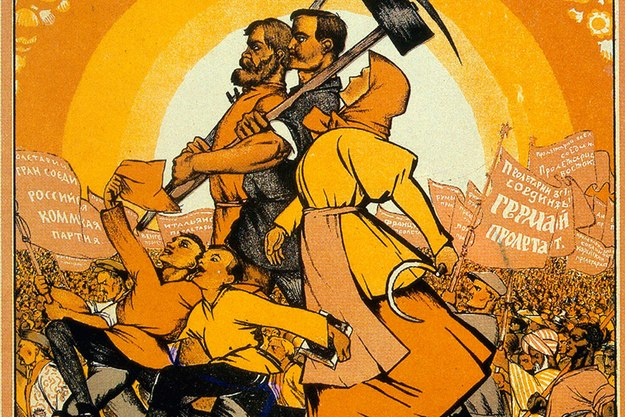

”Kapitalet i det 21:a århundradet” är en vattendelare inom ekonomiskt tänkande, enligt förre Världsbanksekonomen Branko Milanovic. Thomas Piketty har med sin bok öppnat ekonomernas ögon för fördelningsfrågan. Han beskriver en spiral av ekonomisk-politisk ojämlikhet som sedan andra världskriget har satt demokratiska principer ur spel och skapat politisk instabilitet.
Förstamaj-affisch från 1920 av den sovjetiske socialrealisten Nicolas Kotcherguine. Bönder och arbetare går mot en ljus framtid på ruinerna av kapitalismen.
Förstamaj-affisch från 1920 av den sovjetiske socialrealisten Nicolas Kotcherguine. Bönder och arbetare går mot en ljus framtid på ruinerna av kapitalismen. Foto: AOP

Få har lyckats vända upp och ner på en hel tids världsbild som den franske ekonomen Thomas Piketty. Hans bok ”Le capital au XXIe siècle” (Seuil) har kallats för ”en vattendelare i ekonomiskt tänkande” och ”en ’Kapitalet’ för 2000-talet”. Den amerikanska ekonomen Paul Krugman menar att Piketty har skapat ”en revolution i vår förståelse av långsiktig ojämlikhet”.
Piketty har nämligen gjort något så unikt bland ekonomer som att ägna åratal åt att samla taxeringsdata. I boken presenterar han dessa data, som spänner över sekler och kontinenter, på ett lika lättillgängligt som ögonöppnande sätt. Resultatet är en omdaning av vad vi vet om förmögenheter, inkomster och ojämlikhet.
Så har också hans bok blivit en internationell kioskvältare och satt ekonomkåren i rörelse. Sedan boken kom på engelska i mars har reaktionerna haglat och på sin USA-turné häromveckan mottogs Piketty som så mycket av en rockstjärna en ekonom kan vara.
Det är inte bara titeln på boken som påminner om 1800-talsekonomen Karl Marx och hans verk ”Kapitalet”, utan också Pikettys ambition. Precis som Marx drivs han av en vilja att förstå vad som är den starkaste divergerande kraften i en kapitalistisk ekonomi. Och hur den kraften kan kontrolleras. Inte för att han ogillar inkomstskillnader som sådana, utan för att han menar att stora klyftor kan hota meritokratiska principer och en fungerande demokrati.
Piketty vill därför återföra fördelningsfrågan till den ekonomiska analysens kärna, och anser att dagens nationalekonomer borde ägna sig mer åt att ställa de stora frågorna än åt teoretisk spekulation kring perifera problem.
För 1800-talsekonomer som Marx och David Ricardo var fördelningsfrågan central inom nationalekonomin. Marx må felaktigt ha förutspått att förmögenhetskoncentrationen oundvikligen skulle bli så hög att den skulle leda till själva kapitalismens fall, men Piketty menar att han åtminstone ställde rätt fråga till sin tid.
Pikettys teori, å sin sida, är varken deterministisk eller apokalyptisk, så som Marx teori var. Men den bild Piketty målar är ändå inte särskilt upplyftande. För vad han visar är att efterkrigsdecenniernas höga tillväxt och små klyftor var ett historiskt undantag, och inte den nya bestående samhällsordning som många än i dag betraktar den som. Och han menar att vårt sekel kommer att bli den tid när ärvda förmögenheter gör comeback som samhällsdominerande kraft.
Hur blev det så? Ja, enligt Piketty handlar allt om relationen mellan avkastningen på kapital (”r”) och ekonomins tillväxttakt (”g”). Piketty hävdar att den ”fundamentala divergerande kraften” i en kapitalistisk ekonomi utgörs av att avkastningen på kapitalet är större än ekonomins tillväxttakt. Denna olikhet, ”r>g”, är Pikettys grundläggande tes, och den är lika elegant som den är kraftfull.
På vanlig svenska betyder den att sådant som företagsvinster, aktieutdelningar, räntor och hyror, växer snabbare än de totala inkomsterna, vars tillväxttakt i huvudsak avgörs av tillväxten i befolkningen och produktiviteten. Och att detta i sin tur driver en ekonomi mot extrema nivåer av ojämlikhet.
En direkt konsekvens av att avkastningen på kapital växer snabbare än ekonomin är att en allt större andel av inkomsterna omfördelas från löntagare till kapitalägare. Att mer av inkomsterna går till kapitalägare innebär dessutom större inkomstklyftor, för förmögenheter är i praktiken alltid mer ojämlikt fördelade än arbete. Dessutom kan kapitalägare investera mer, ju större inkomster de har. Större kapitalinkomster kan på så sätt öka förmögenhetsklyftan och förmögenheternas värde relativt nationalinkomsten. Detta omfördelar i sin tur ännu mer inkomster från löntagare till kapitalägare.
Att det är så här det hänger ihop är inget konstigt – Piketty kallar det till och med kapitalismens ”fundamentala lagar”. Om avkastningen på kapital dessutom är väsentligt högre än ekonomins tillväxttakt, genereras ännu större förmögenhetskoncentration och inkomstklyftor.
Att kapitalinkomsterna växer snabbare än ekonomin är ingen ”lag”, men ett historiskt samband; avkastning på kapital har haft överhanden genom nästan alla tider. Med undantag för det sekel vi just lämnat bakom oss.
Vid 1900-talets början bröt första världskriget ut. Dessförinnan var Europa ett samhälle dominerat av ärvda förmögenheter och rika dynastier. Studier och hårt arbete var inte en säker väg till välstånd; i stället gällde det att ärva eller att gifta sig rikt.
För hundra år sedan nådde förmögenhetskoncentrationen sin topp, när den rikaste procenten av befolkningen i Storbritannien, Frankrike och Sverige (ja, även Sverige) ensamma ägde över halva förmögenhetsvärdet i sina respektive länder.
Men så utdelades några hårda slag mot de stora förmögenheterna, som kom att förändra vår idé om hur kapitalismen fungerar. Första världskriget bröt ut. Den stora depressionen i USA slog till. Och så kom andra världskriget.
Kapital förstördes och konfiskerades. Skatter höjdes för att finansiera krigen, företag gick i konkurs och värdet på statsobligationer inflaterades bort.
Krafterna som drabbade de rika ekonomierna under bara några få decennier var enorma. Från att de privata förmögenheterna var värda uppåt sju gånger mer än nationalinkomsten vid första världskrigets utbrott, hade över halva värdet gått upp i rök vid 1900- talets mitt.
Återuppbyggnaden av förmögenheterna tog vid när krigen slutade – men stora förmögenheter var förstörda. Piketty visar att efterkrigstiden samtidigt hade rekordhög tillväxt. Ekonomier skulle komma ikapp vad de hade förlorat i krigen och barnafödandet boomade. Både välfärdsstater och medelklasser växte fram.
Under dessa efterkrigsår växte en känsla av att en ny samhällsordning hade tagit plats. Västvärlden upplevde en tid av historiskt små klyftor, och ekonomen Simon Kuznets formulerade en inflytelserik teori som sa att ekonomisk tillväxt automatiskt utjämnar klyftor när tillväxten har nått tillräckligt långt; en tro på att ”tillväxten är en stigande flod som lyfter alla båtar”, som Piketty skriver. Fördelningsfrågan tappade mark och borta var det ärvda kapitalets dagar.
Eller var de? När 1900-talskrigen raderade det förflutna skapades en illusion av att kapitalismen hade förändrats strukturellt. Men det fanns inga tecken på ökad jämlikhet innan första världskriget bröt ut. Och det var bara de stora förmögenheterna som drabbades av krigen – inte kapitalismen som sådan.
Med 80-talet var efterkrigstiden förbi. De krigsdrabbade ekonomierna hade återhämtat sig och tillväxttakten dämpades. Ronald Reagan kom till makten i USA och Margaret Thatcher i Storbritannien, båda med löften om att ”rulla tillbaka välfärdsstaten”. Skatter sänktes eller försvann på sådant som arv, fastigheter och toppinkomster av kapital och arbete. Arbetskraften försvagades och löntagare fick en mindre del av samhällskakan.
Förmögenheter började byggas upp redan vid krigsslutet, men det var framför allt under 80-talet som klyftorna började växa; toppen av fördelningen började separera sig från resten.
I dag får den rikaste hundradelen av befolkningen – de så kallade enprocentarna – tio procent av de sammanlagda inkomsterna i Europa och uppåt 20 procent i USA, mot runt 7 procent under 80-talet. Även de svenska enprocentarnas andel av inkomsterna har ökat, från 4 till 7 procent. Antalet svenskar som kan leva på enbart kapitalinkomster – så kallade ”rentiärer” – har nära tredubblats på tio år och de svenska miljardärerna är rekordmånga och rekordrika.
I dag är de västliga ekonomiernas förmögenheter värda nära dubbelt så mycket som under efterkrigsåren, relativt nationalinkomsten. Mycket riktigt har också mer av inkomsterna fördelats om från arbete till kapital (en relation som alltså inte är stabil över tid, som traditionell ekonomisk teori säger).
Och nu menar Piketty att vi närmar oss ordningen från tiden före första världskriget, i vilken avkastningen på kapital är väsentligt högre än tillväxten och leder till ökad förmögenhetskoncentration. För tillväxten ser ut att hamna på en långsiktigt lägre bana i många rika länder. Skatteparadis frodas och länder konkurrerar om investeringar på den globala kapitalmarknaden genom att erbjuda lägst kapitalskatter. Det blir en ”kapplöpning till botten” där kapitalskatter till slut kan försvinna.
Stämmer Pikettys prognos, blir vårt århundrade en tid av svaga meritokratiska principer och med arv eller giftermål som vägen till ett gott liv. En tid då en klass av rika rentiärer återuppstår, som skapar rika arvtagare och mäktiga familjedynastier. Stora förmögenheter ger nämligen stor makt, som i sin tur kan användas för att förstärka förmögenhetskoncentrationen. Så kan en spiral av ekonomisk-politisk ojämlikhet uppstå, som sätter demokratiska principer ur spel och skapar politisk instabilitet.
Men – och detta är ett viktigt men – denna utveckling är inte given. Pikettys framtidsbedömningar är osäkra och en teoretisk invändning (som dock inte grundas i historiska data) är att avkastningen på kapital bör drivas ner i takt med att förmögenheterna ökar. Och fördelningsfrågan är som sagt politisk.
1900-talskrigen må ha skapat historiskt små klyftor – men det är inte krafter vi vill uppleva igen. Så vad gör vi? Piketty argumenterar för att vi måste införa en global, progressiv skatt på privata förmögenheter, för att kunna kontrollera kapitalismens fundamentala divergerande kraft, r>g. För om tillväxttakten är svår att påverka, är det avkastningen på kapital vi kan göra något åt.
Svårigheten i att få till global samordning, i synnerhet i en fråga där de rika har politisk makt och anledning att vakta sina intressen, är han dock medveten om.
Oavsett ser vi nu fördelningsfrågan med nya ögon. Piketty visar att den är global, evig och politisk. Och högaktuell. Något behöver göras för att kontrollera den kraft som drar oss mot en tid formad av den döda handens giv. Och med detta är han tydlig: bollen ligger hos oss.
Agneta Berge är ekonom och utredare på LO i projektet ”Full sysselsättning och solidarisk lönepolitik”.